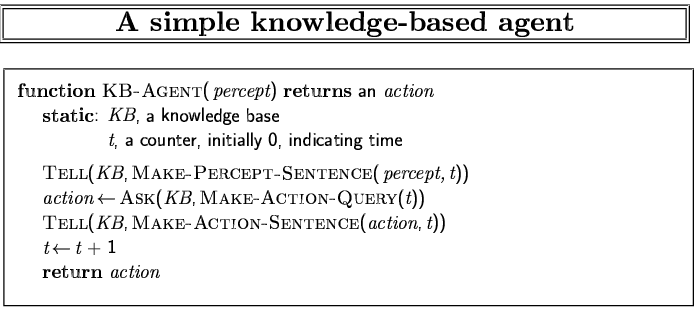
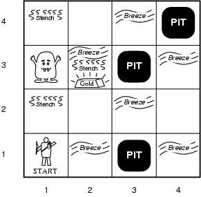
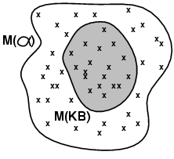
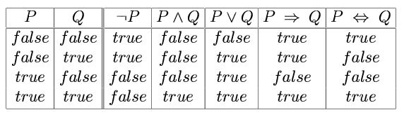
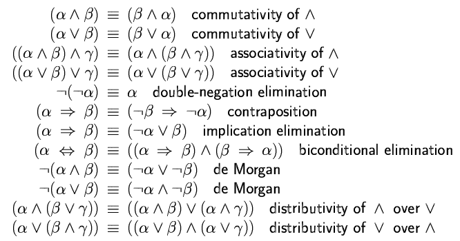
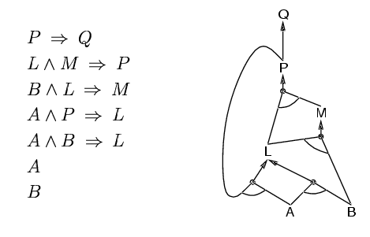
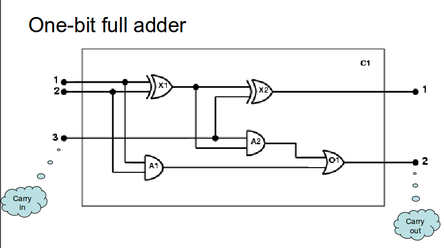
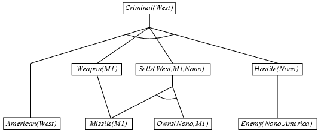
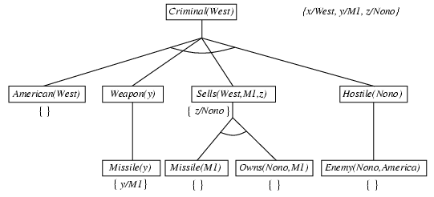

Chapter 3Searching for solutionsMeasuring problem-solving performance – completeness, optimality, timecomplexity, space complexityBreadth-firstsearchUniform-costsearchDepth-firstsearchDepth-limitedsearchIterativedeepeningHeuristicsearchGreedybest-first searchA*searchIterative-deepeningA*HeuristicfunctionsChapter 4LocalsearchChapter 5Chapter 6DefiningcspsAdvantagesof cspConstraintgraphsConstraintpropagationNode,arc, path, k-consistencyBacktrackingsearch for cspsMinimumremaining values heuristicDegreeheuristicChapter 7Knowledge-Based agentsThe Wumpus worldPEAS descriptionWumpus world characterizationEntailmentPropositional logicSyntaxSemanticsLogical equivalenceValidity, and SatisfiabilityInference rules and proofsApplication of inference ruleModel checkingInference rulesProof by resolutionConverting to CNFForward,backward chainingHornclauseForward chainingBackward chainingForward vs. backward chainingChapter8Firstorder logic vs propositional logicSyntax and semantics of FOLAssertions and queries in FOLKnowledge engineering in FOLThe electronic circuits domain example:Chapter 9Universal InstantiationExistential InstantiationUnificationExample knowledge baseForward ChainingPropertiesEfficiencyBackward ChainingPropertiesConverting FOL to CNFChapter 25
Hillclimbing
Simulatedannealing
Localbeam search
Geneticalgorithms
Minimaxsearch
Alpha-betapruning
Moveordering
Evaluationfunctions
Cuttingoff search
Forwardpruning
Searchvs lookup
Least-constrainingvalue heuristic
Forwardchecking
Maintainingarc consistency
Localsearch for csps
Knowledge-base: set of sentences in a formal language
Knowledge level: what an agent knows, regardless of how implemented
Implementation level: data structures in KB and algorithms that manipulate them
The agent must be able to:
Represent states, actions, etc.
Incorporate new percepts
Update internal representations of the world
Deduce hidden properties of the world
Deduce appropriate actions

Performance measure:
Environment:
Sensors: Stench, Breeze, Glitter, Bump, Scream
Actuators: Left turn, Right turn, Forward, Grab, Release, Shoot

Fully Observable No – only local perception Deterministic Yes – outcomes exactly specified Episodic No – sequential at the level of actions Static Yes – Wumpus and Pits do not move Discrete Yes Single-agent? Yes – Wumpus is essentially a natural feature
Entailment means that one thing follows from another:
KB ╞ α
Knowledge base KB entails sentence α if and only if α is true in all worlds where KB is true
M(α) is the set of all models of α
Then KB ╞ α iff M(KB) M(α)

Propositional logic is the simplest logic
The proposition symbols P1, P2 etc are sentences
Each model specifies true/false for each proposition symbol
Example:
| P1,2 | P2,2 | P3,1 |
|---|---|---|
| false | true | false |
Simple recursive process evaluates an arbitrary sentence, e.g.,

Two sentences are logically equivalent iff true in same models: α ≡ β iff α╞ β and β╞ α

A sentence is valid if it is true in all models,
Validity is connected to inference via the Deduction Theorem:
A sentence is satisfiable if it is true in some models,
A sentence is unsatisfiable if it is true in no models,
Satisfiability is connected to inference via the following:
Proof methods divide into (roughly) two kinds:
Legitimate (sound) generation of new sentences from old
Proof = a sequence of inference rule applications
Typically require transformation of sentences into a normal form
Truth table enumeration (always exponential in n)
Improved backtracking, e.g., Davis--Putnam-Logemann-Loveland (DPLL)
heuristic search in model space (sound but incomplete)
Modus ponens: (α β, α) β
And-elimination: (α β, α) β
All the logical equivalences can be used as inference rules.
Conjunctive Normal Form (CNF): conjunction of disjunctions of literals, clauses
Resolution is sound and complete for propositional logic
B1,1 (P1,2 P2,1)
Eliminate , replacing α β with (α β)(β α).
Eliminate , replacing α β with α β.
Move inwards using de Morgan's rules and double-negation:.
Apply distributivity law ( over ) and flatten:
Proof by contradiction, i.e., show KBα unsatisfiable
KB = (B1,1 (P1,2 P2,1)) B1,1 α = P1,2
Horn Form (restricted)
KB = conjunction of Horn clauses
Horn clause =
Can be used with forward chaining or backward chaining.
These algorithms are very natural and run in linear time
Idea: fire any rule whose premises are satisfied in the KB,

Idea: work backwards from the query q:
to prove q by BC,
Avoid loops: check if new subgoal is already on the goal stack
Avoid repeated work: check if new subgoal:
FC is *data-driven, automatic, unconscious processing,
May do lots of work that is irrelevant to the goal
BC is *goal-driven, appropriate for problem-solving,
Complexity of BC can be much less than linear in size of KB
Propositionalinference based on model checking – 2 approaches
Whereas propositional logic assumes the world contains facts
first-order logic (like natural language) assumes the world contains:
Constants
King John, 2, NUS, ...
Predicates
Brother, >, ...
Functions
Sqrt, LeftLegOf, ...
Variables
x, y, a, b, ...
Connectives
, , , ,
Equality
=
Quantifiers
Assertions: Sentences added to a knowledge base using TELL, exactly as in propositional log
For example: we can assert that John is a king, Richard is person, and all kings are persons:
TELL (KB, King(John)).
TELL (KB, Person(Richard)).
TELL (KB, ∀x King(x) ⇒ Person(x)).
We can ask questions of the knowledge base using ASK
Questions asked with ASK are called queries or goals.
If we want to know what value of x makes the sentence true, we will need a different function, ASKVARS, which we call with:
substitution or binding list: Answer from ASKVARS in the form s: {x/John}

Identify the task
Assemble the relevant knowledge
Decide on a vocabulary
Alternatives:
Type(X1) = XOR
Type(X1, XOR)
XOR(X1)
Encode general knowledge of the domain
∀t1, t2 Connected(t1, t2) Signal(t1) = Signal(t2)
∀t Signal(t) = 1 Signal(t) = 0
∀t1, t2 Connected(t1, t2) Connected(t2, t1)
∀g Type(g) = OR Signal(Out(1, g)) = 1 ∃n Signal(In(n,g)) = 1
∀g Type(g) = AND Signal(Out(1,g)) = 0 ∃n Signal(In(n,g)) = 0
∀g Type(g) = XOR Signal(Out(1,g)) = 1 Signal(In(1,g)) ≠ Signal(In(2,g))
∀g Type(g) = NOT Signal(Out(1,g)) ≠ Signal(In(1,g))
Encode the specific problem instance
Type(X1) = XOR Type(X2) = XOR Type(A1) = AND Type(A2) = AND Type(O1) = OR
Connected(Out(1,X1),In(1,X2)) Connected(In(1,C1),In(1,X1)) Connected(Out(1,X1),In(2,A2)) Connected(In(1,C1),In(1,A1)) Connected(Out(1,A2),In(1,O1)) Connected(In(2,C1),In(2,X1)) Connected(Out(1,A1),In(2,O1)) Connected(In(2,C1),In(2,A1)) Connected(Out(1,X2),Out(1,C1)) Connected(In(3,C1),In(2,X2)) Connected(Out(1,O1),Out(2,C1)) Connected(In(3,C1),In(1,A2))
Pose queries to the inference procedure
Debug the knowledge base
Every instantiation of a universally quantified sentence is entailed by it:
for any variable v and ground term g
E.g.
∀x King(x) Greedy(x) Evil(x) yields: King(John) Greedy(John) Evil(John) King(Richard) Greedy(Richard) Evil(Richard) King(Father(John)) Greedy(Father(John)) Evil(Father(John))
For any sentence α, variable v, and constant symbol k that does not appear elsewhere in the knowledge base:
E.g.
∃x Crown(x) OnHead(x, John) yields:
Crown(C1) OnHead(C1,John)
provided C1 is a new constant symbol, called a Skolem constant
We can get the inference immediately if we can find a substitution θ such that King(x) and Greedy(x) match King(John) and Greedy(y)
θ = {x/John,y/John} works
| p | q | θ |
|---|---|---|
| Knows(John, x) | Knows(John, Jane) | {x/Jane} |
| Knows(John, x) | Knows(y, OJ) | {x/OJ, y/John} |
| Knows(John, x) | Knows(y, Mother(y)) | {y/John, x/Mother(John)} |
| Knows(John, x) | Knows(x, OJ) | {fail} |
Standardizing apart eliminates overlap of variables
To unify Knows(John,x) and Knows(y,z),
The first unifier is more general than the second.
There is a single most general unifier (MGU) that is unique up to renaming of variables.
The law says that it is a crime for an American to sell weapons to hostile nations. The country Nono, an enemy of America, has some missiles, and all of its missiles were sold to it by Colonel West, who is American.
Prove that Col. West is a criminal
It is a crime for an American to sell weapons to hostile nations:
Nono has some missiles, i.e., ∃x Owns(Nono,x) Missile(x):
All of its missiles were sold to it by Colonel West:
Missiles are weapons:
An enemy of America counts as "hostile":
West, who is American:
The country Nono, an enemy of America:

Incremental forward chaining: no need to match a rule on iteration k if a premise wasn't added on iteration k-1
Matching itself can be expensive:
Database indexing allows O(1) retrieval of known facts
Forward chaining is widely used in deductive databases

Depth-first recursive proof search: space is linear in size of proof
Incomplete due to infinite loops
Inefficient due to repeated subgoals (both success and failure)
Widely used for logic programming
Everyone who loves all animals is loved by someone:
∀x [∀y Animal(y) Loves(x,y)] [∃y Loves(y,x)]
Eliminate biconditionals and implications:
Move inwards: ∀x p ≡ ∃x p, ∃x p ≡ ∀x p
FOLproof by resolution
Localization
Mapping
SLAM
Configurationspace
Skeletonization
PIDcontrol
Potentialfield control
Learning
Machinelearning
Typesof learning
Reinforcementlearning
Q-learning
DeepLearning
Deeplearning applications
Deeplearning architectures